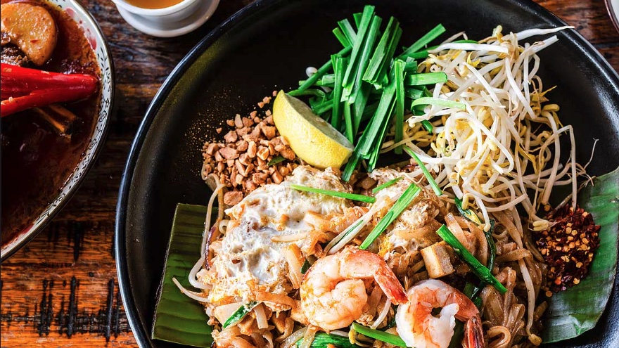

home
Khao Phad Gai Recipe

Pad Thai is an iconic Thai Noodle dish that has flavors of sweet, sour, and saltiness. I show
how to easily make your own sauce to create this dish at home.
Usually when someone is trying Thai food for the first time, they order Pad Thai. It's a safe
choice, you really can't go wrong with stir-fried rice noodles. Pad Thai has a popular trifecta
of flavors, sweet, salty, and a little sour from the tamarind (which is a key ingredient in
the sauce).
Pad Thai can be intimidating to recreate at home, but I will list steps below along with a
full YouTube Video at the end of this post. I highly recommend watching the video before
making this dish.
Ingredients
- Shallots
- Garlic
- Dried shrimp
- Fresh shrimp
- Pressed tofu
- Sweet preserved raddish
- Chilli flakes
- Eggs
- Roasted peanuts
- Rice noodles
- Bean sprouts
- Garlic chives
- Lime wedges
Instructions
- Melt and caramelize the palm sugar, add some water once melted to stop
the caramelization.
- Add fish sauce and tamarind and bring to a simmer. After a few minutes turn of
the heat and let it sit until the sugar is dissolved.
- Cook off the shrimp in a hot wok for just 1 or 2 minutes. Remove from the pan.
- Sauté the shallots, garlic, tofu, dried shrimp, preserved radish and chilli flakes.
- Add the soaked noodles and then the sauce. Toss until the noodles absorbed all the sauce.
- Push the noodles to one side and add the eggs to the space you've made and break the yolks.
Put the noodles on top of the eggs and let it cook for 15-30 seconds. Flip and toss to mix.
- Add the peanuts, bean sprouts and garlic chives. Turn off the heat and toss until the
beansprouts are incorporated and slightly wilted.
- Plate and top with more peanuts and shrimp. Garnish with a lime wedge and extra
chilli flakes on the side.